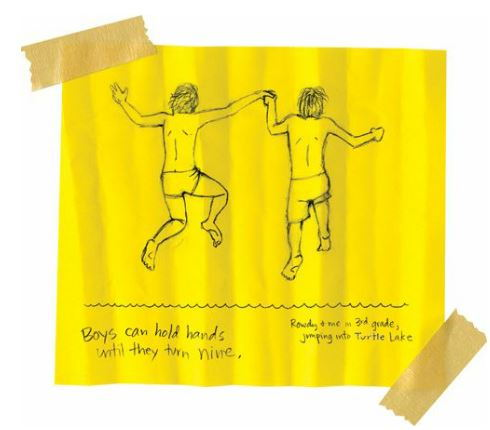

Remembering
Today my mother, father, and I went to the cemetery and cleaned graves.
We took care of Grandmother Spirit, Eugene, and Mary.
Mom had packed a picnic and Dad had brought his saxophone, so we made a whole day of it.
We Indians know how to celebrate with our dead.
And I felt okay.
My mother and father held hands and kissed each other.
“You can’t make out in a graveyard,” I said.
“Love and death,” my father said. “It’s all love and death.”
“You’re crazy,” I said.
“I’m crazy about you,” he said.
And he hugged me.
And he hugged my mother.
And she had tears in her eyes.
And she held my face in her hands.
“Junior,” she said. “I’m so proud of you.”
That was the best thing she could have said.
In the middle of a crazy and drunk life, you have to hang on to the good and sober moments tightly.
I was happy. But I still missed my sister, and no amount of love and trust was going to make that better.
I love her. I will always love her.
I mean, she was amazing. It was courageous of her to leave the basement and move to Montana. She went searching for her dreams, and she didn’t find them, but she made the attempt.
And I was making the attempt, too. And maybe it would kill me, too, but I knew that staying on the rez would have killed me, too.
It all made me cry for my sister. It made me cry for myself.
But I was crying for my tribe, too. I was crying because I knew five or ten or fifteen more Spokanes would die during the next year, and that most of them would die because of booze.
I cried because so many of my fellow tribal members were slowly killing themselves and I wanted them to live. I wanted them to get strong and get sober and get the hell off the rez.
It’s a weird thing.
Reservations were meant to be prisons, you know? Indians were supposed to move onto reservations and die. We were supposed to disappear.
But somehow or another, Indians have forgotten that reservations were meant to be death camps.
I wept because I was the only one who was brave and crazy enough to leave the rez. I was the only one with enough arrogance.
I wept and wept and wept because I knew that I was never going to drink and because I was never going to kill myself and because I was going to have a better life out in the white world.
I realized that I might be a lonely Indian boy, but I was not alone in my loneliness. There were millions of other Americans who had left their birthplaces in search of a dream.
I realized that, sure, I was a Spokane Indian. I belonged to that tribe. But I also belonged to the tribe of American immigrants. And to the tribe of basketball players. And to the tribe of bookworms.
And the tribe of cartoonists.
And the tribe of chronic masturbators.
And the tribe of teenage boys.
And the tribe of small-town kids.
And the tribe of Pacific Northwesterners.
And the tribe of tortilla chips-and-salsa lovers.
And the tribe of poverty.
And the tribe of funeral-goers.
And the tribe of beloved sons.
And the tribe of boys who really missed their best friends.
It was a huge realization.
And that’s when I knew that I was going to be okay.
But it also reminded me of the people who were not going to be okay.
It made me think of Rowdy.
I missed him so much.
I wanted to find him and hug him and beg him to forgive me for leaving.
